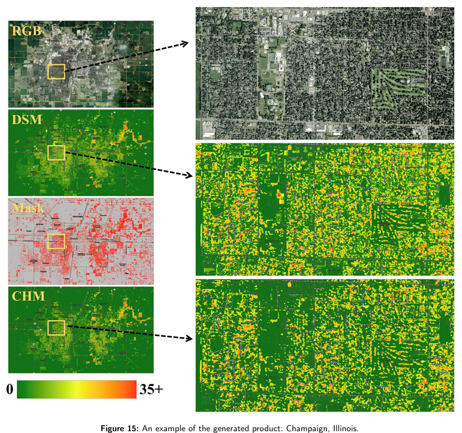

Projects & Datasets

TreeFusion v1.0 – A very-high-resolution urban canopy height product
TreeFusion v1.0 is a very-high-resolution urban forest dataset designed for urban tree canopy analysis. The dataset provides two geospatial products for the core urban regions of 50 U.S. cities: Canopy Height Map (CHM) and Vegetation Mask. The products were generated using a multimodal fusion model that integrates NAIP RGB-NIR imagery, Sentinel-1 SAR VV/VH backscatter, normalized Digital Surface Model (nDSM), and rough canopy height priors. The model was trained at large scale using the OpenTree400k benchmark and achieved strong performance with an MAE of 2.09 m and an R² of 0.78. Independent validation was further conducted using 10 selected very-high-resolution NEON ALS sites, achieving an MAE of 2.04 m and an R² of 0.71.

Poplar-leaf – A UAV benchmark dataset for forestry leaf instance segmentation
Poplar-leaf is a UAV-based benchmark dataset designed for forestry leaf phenotyping and instance segmentation. The dataset was collected in a poplar plantation located in Huanghai Seaside National Forest Park, Dongtai City, Jiangsu Province, China (32°51'N, 120°50'E). Images were captured using a DJI M350RTK UAV equipped with a P1 camera, flying at an altitude of 5 meters along pre-planned routes to acquire multi-angle canopy views. The dataset contains 1,202 labeled images with 19,876 leaf instances and 1,202 leaf branches, each with a resolution of 1024 × 1024. Pixel-level instance annotations were created using LabelMe, with initial segmentation assisted by the SAM model and refined through manual verification by an 8-person annotation team.

RuralUse – A dataset for semantic segmentation in rural land use analysis
RuralUse is a dataset designed for semantic segmentation in rural land use analysis, created using open-source data from Google Earth Engine (GEE). The dataset was produced and made publicly available by Jiangsu Open University. It consists of 2,042 RGB images, each with a size of 224 × 224 pixels. Annotations are provided in JSON format using LabelMe, together with mask annotation files, making the dataset convenient for deep learning training and evaluation.